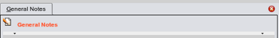
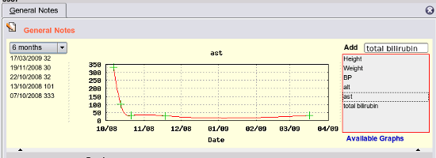
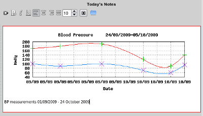

Viewing Graphs
Just below the heading on each tab, here the General notes tab, there is a light coloured line, with a tiny arrow
showing - an example of
splitters

and these can be clicked on to reveal hidden sections - in this case the EasyGP Graphing section, here showing
a patient with a resolving hepatitis, graphed from their hl7 pathology results:

Graphs can be dragged and dropped into your progress notes:
